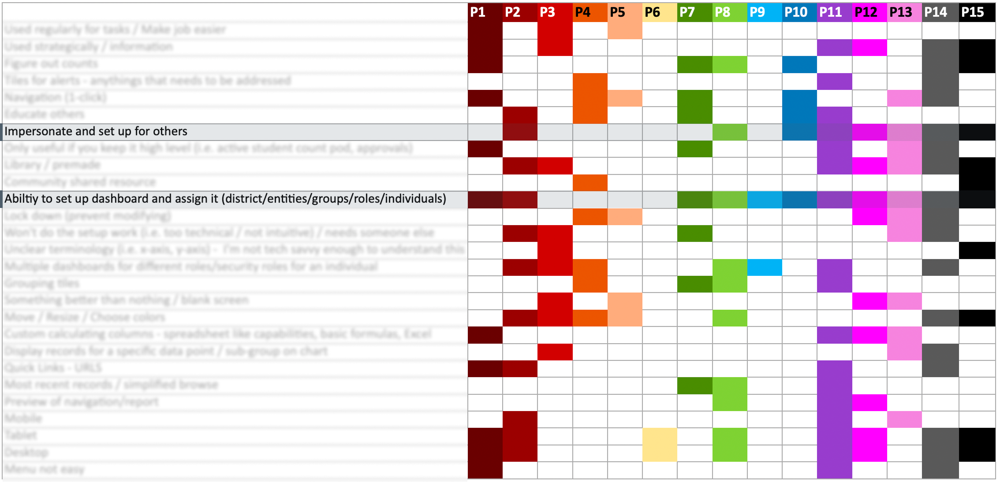
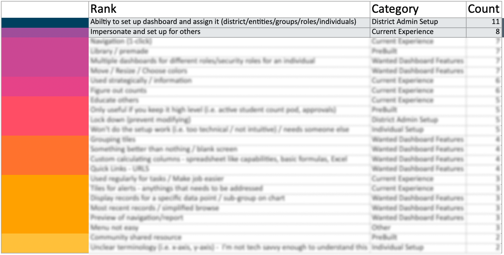
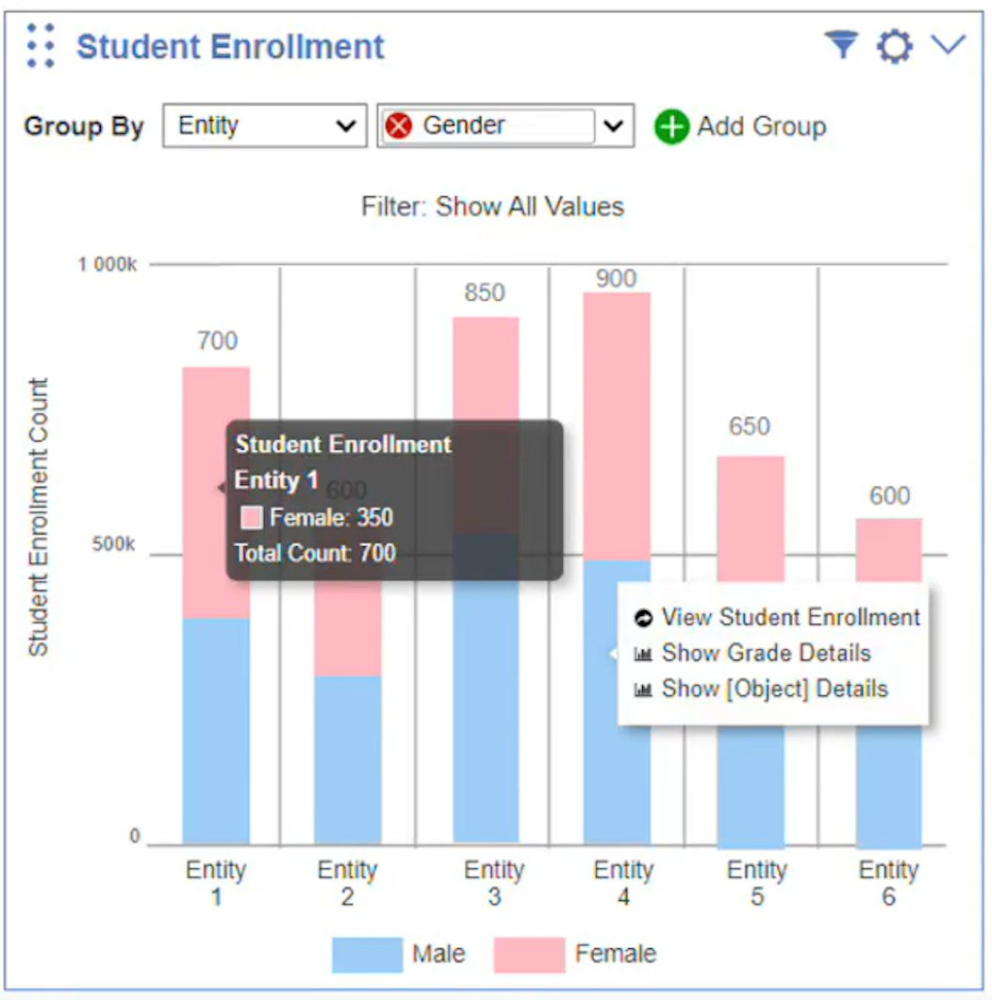
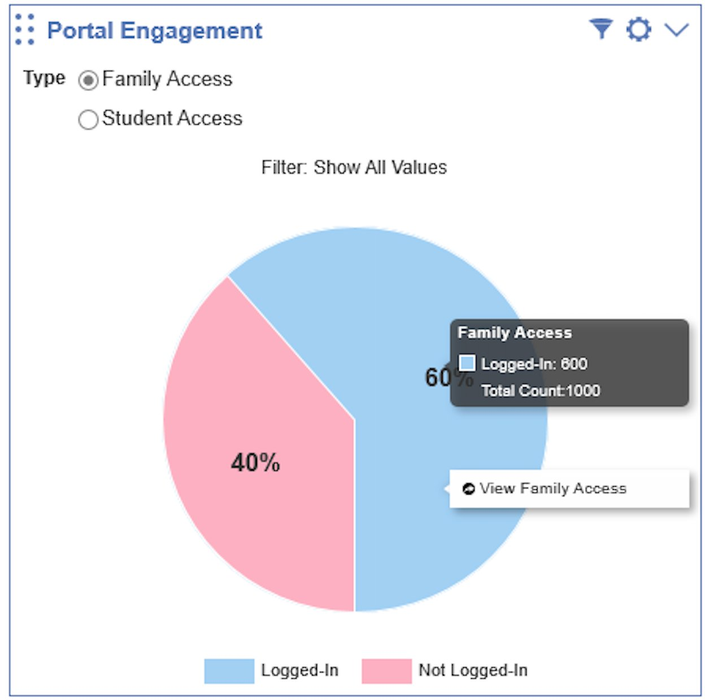
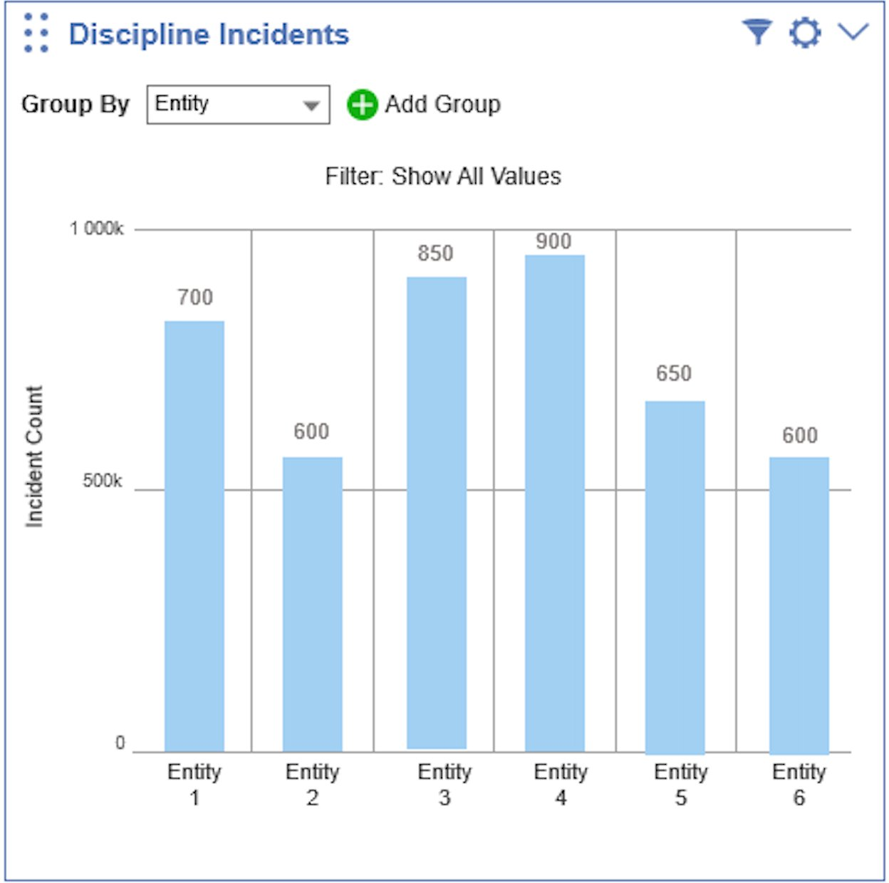
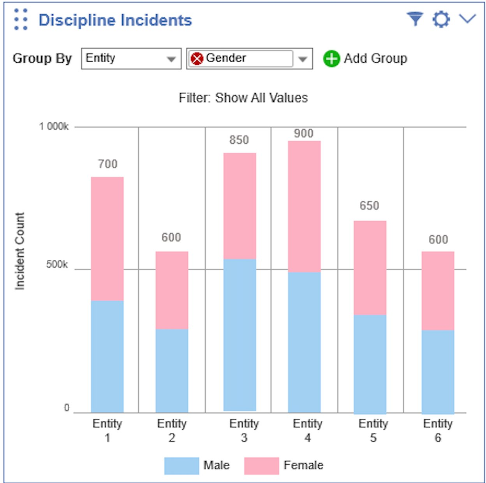
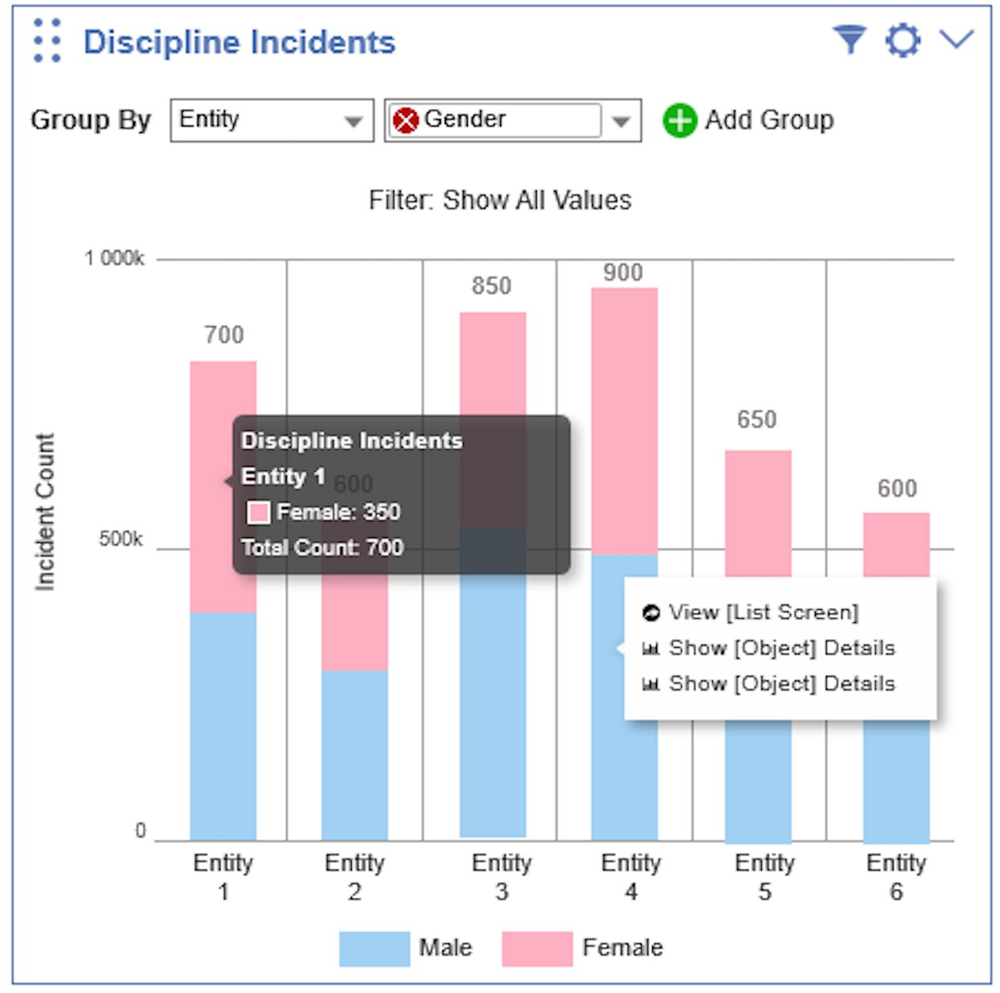
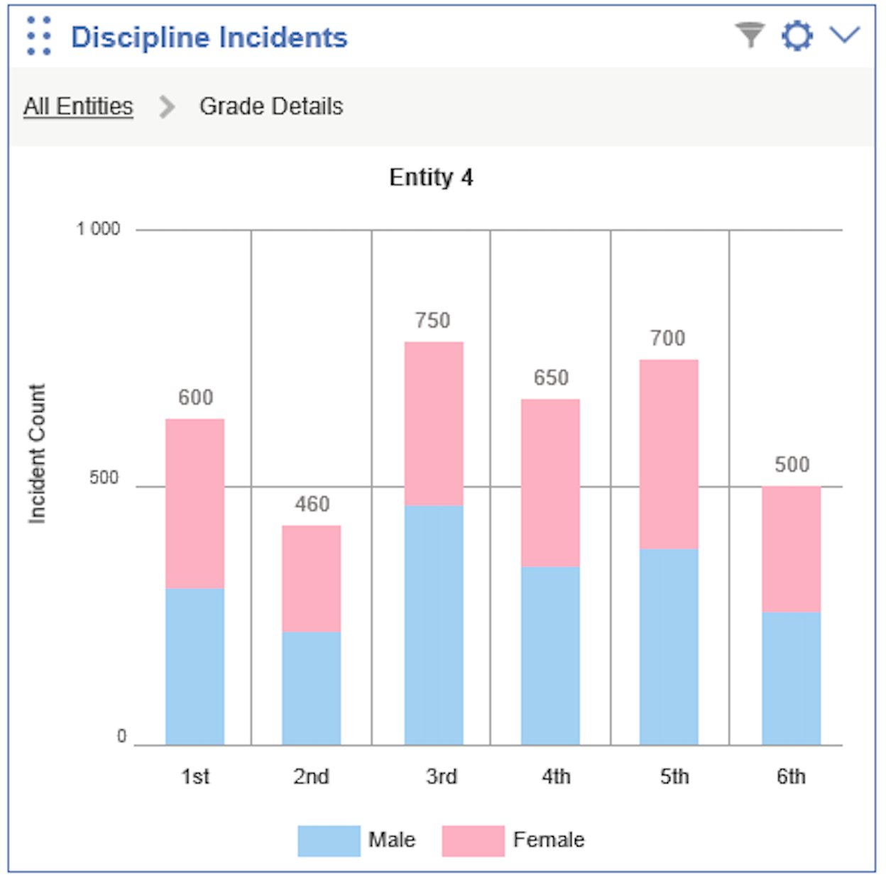
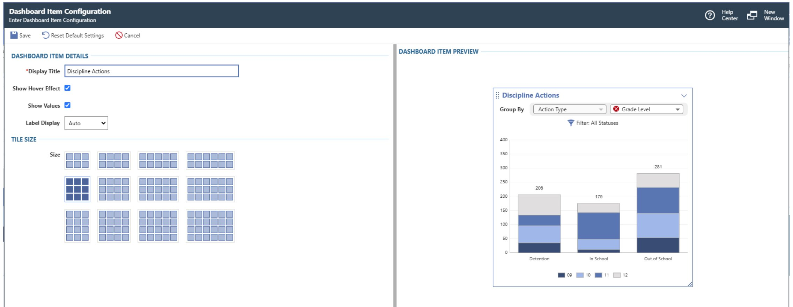

UX Case Study · K–12 Data Platform
Dashboard Redesign
From Blank Screens to Data-Rich First Impressions
Impersonation Eliminated
Admins now build any user's dashboard securely from their own account
12 Widgets Designed
From undefined OKR to a released widget library — built on a shared design vision
180+ Customer Requests
Demand validated through the product ideas portal before a single widget was designed
01 — Overview
When the Real Problem Was Hidden Behind the OKR
A company-wide initiative, a deeper user problem, and a design sprint that changed the scope
The Starting Point
A company-wide initiative launched with a clear deliverable: design 12 new dashboard widgets by year-end. The OKR was set. Executive expectations were aligned. The pressure was on to execute.
But when I entered the project, the scale of the problem became clear. Dashboards launched empty by default — admins or users had to manually add and configure everything themselves. Until they did, there was nothing to see. Without a way for admins to efficiently set up and push dashboards to their users, even the best-designed widgets would sit unused. The visible problem was a missing feature set. The real problem was that the system lacked the setup infrastructure to deliver value from day one.
The work that followed grew from an OKR into a system: a Dashboard Manager, a scalable admin workflow, and a widget library backed by over 180 customer votes across four product ideas.
Role & Scope
I led UX design from the discovery phase through concept validation and executive alignment — establishing the design vision, facilitating the sprint, defining the widget concept framework, and setting the patterns that guided the team through release. Once the foundation was established and leadership was aligned, I transitioned to embed UX on a newly forming product team, where I brought the same research-led approach to an entirely different class of user problem. A second designer carried this work through pixel-perfect handoff and release with my support available throughout. The core patterns I established remained largely intact at launch.
The challenge wasn't simply designing 12 widgets. It was creating the infrastructure — for both admins and end users — that made those widgets worth building in the first place.
02 — Discover
Listening Before Designing
15 user interviews and the setup problem hiding in plain sight
User Research
Research was led by our Product Manager; I participated as a strategic observer and active collaborator — taking notes, asking follow-up questions in real time, helping reframe questions to surface user needs rather than validate assumptions, and identifying the themes and excerpts that would later shape how we communicated the problem to leadership. Three distinct user types emerged.
Power Users / Database Admins
- Deep understanding of the system, data, customization, and security
- Confidently create reports, live tiles, and charts; trust the views and filters they apply
- Want their staff to also leverage dashboard tools in their daily work
- Often asked to build live and chart tiles for other users across the district
High-Proficiency Tech Users
- Comfortable using technology; will follow instructions to customize their dashboard
- Use data to make decisions and want the dashboard to help them visualize it
Low-Proficiency Tech Users
- Less comfortable with technology; struggle with technical setup instructions
- A single failure or unexpected result typically leads to product abandonment
- Expect their technology to be set up for them, and data to be intuitive on arrival
Research Synthesis
I synthesized findings across all 15 participants using a rainbow sheet — mapping themes against individual participants to surface patterns. The ranked output made the priorities undeniable: admin setup and impersonation topped the list by a wide margin, validating the decision to expand scope.


The Real Cost of Setup
Before this project, there were no pre-built widgets, no dashboard library, and no way to push dashboards to users by role or group. If an admin needed 20 employees to have the same dashboard, the process was entirely manual — repeated from scratch for every single person.
Admin logs in as another user — the only way to build their dashboard
Step 1
Impersonate the user account
Step 2
Navigate to the first relevant screen
Step 3
Manually create a chart widget for that screen
Step 4
Navigate to next screen → create another chart
Step 5
Repeat for every chart needed on this user's dashboard
Step 6
Stop impersonation
No templates, no sharing, no group assignment. The entire process starts over.
Again
Impersonate → navigate → create each chart manually → stop impersonation
Again
Impersonate → navigate → create each chart manually → stop impersonation
Again
Impersonate → navigate → create each chart manually → stop impersonation
× N users
Repeated for every user who needed a dashboard
This wasn't a bug — it was the intended workflow. And it proved exactly why we needed pre-built widgets, a dashboard library, and an efficient way to assign by security role or group.
Making the Pain Visible to Leadership
A synthesis document alone wouldn't move an OKR. I needed executives to feel the problem, not just read about it. I carefully selected excerpts from our research sessions and edited them into a highlight video — district admins describing their daily reality in their own words. Our Product Manager shared the video with the executive team. Three pain points echoed across every participant:
Admin voices — composite of research participants
"I set up dashboards for all 29 employees we were onboarding — charts, tiles, everything. When I realized I'd configured one chart incorrectly, I had to open each person's dashboard and fix it. Manually. 29 times. The hours I wasted still hurts."Business Manager — K–12 SIS Platform
"I love that you want to give us pre-built dashboards. But how can you possibly know what to put on our dashboards? Give us a template we can actually customize and push out to our staff."Head of IT — K–12 SIS Platform
"I want one place where I can see everything available to add, and then assign it to everyone with the same job role at once. Right now I'm doing it screen by screen, dashboard by dashboard."District Office Staff — K–12 SIS Platform
03 — Define
Two Problems, One Root Cause
Empty dashboards and an inefficient admin workflow were symptoms of the same missing capability
The Core Insight
Admins are not just users of the dashboard; they are the critical enablers of every other user's experience. If admins can't efficiently configure and push dashboards at scale, no end user ever reaches the data value the product is capable of delivering. Solving the admin workflow wasn't a scope expansion — it was the opportunity to make all 12 widgets actually matter.
Current State
- Dashboards launch empty by default with no path to value
- Admins use impersonation to configure each user's dashboard individually
- No way to assign dashboards to groups, roles, or entities at scale
- No widget library, no preview before adding
- End users confused; admins overwhelmed
Future State
- Admins build any user's dashboard securely from their own account
- Dashboards pushed to groups, roles, or individuals from a single place
- Impersonation eliminated entirely
- 12 data visualization widgets designed for insight, not just output
- Users explore data independently, without a data analyst in the room
04 — Design Sprint
Three Days to a Shared Direction
A Design Sprint 2.0 to align stakeholders and generate something worth testing
Why a Sprint
Stakeholders agreed on the OKR but not on the solution. Without a structured session, the team risked months of iterating on the wrong framing. I co-facilitated a 3-day Design Sprint 2.0 to bring product, engineering, and leadership into a shared problem-solving space and to generate a prototype worth testing against real users.
The artifact below represents the key outputs: a shared long-term goal, sprint questions to constrain scope, user maps for both admin paths, concepts voted on to prototype, and lightning demo takeaways gathered from competitive products.
Long-Term Goal
In 2 years…
System Admins will have 12 plus default dashboard widgets to create, share, and assign to role-specific dashboards.
Sprint Questions
- Can we keep the end user process simple (adding / sharing)?
- Can we keep all teams on the same page to avoid scope creep?
- Can we build a useful dashboard without being everything to everyone?
Admin User Maps
Concepts Voted to Prototype
Lightning Demo Takeaways
- Use of space
- Filters on the side
- Group containers
- Drill down data
- Lots of graph options
- Clean and simple
- Data displayed in multiple ways
- Switch views; binary data; fluid responsive layouts
Design Sprint 2.0 walkaway artifact — cross-functional output from product, engineering, UX, and leadership
Research & Validation Timeline
User research spanned four months and ran in phases — stakeholders first, then customers, then a design sprint to translate what we'd learned into something testable. Formal validation with Spring User Groups ran in March and April.
| Phase | January | February | March | April |
|---|---|---|---|---|
| Stakeholder Research | ||||
| Customer Research | ||||
| Design Sprint 3 days | ||||
| Spring User Groups Formal validation · 100+ contacts |
|
The Design Sprint was just 3 days in a 4-month arc — a small window with an outsized impact on alignment and direction.
05 — Design
Designing Data That Does Something
From undefined OKR to a widget framework built on the right questions
Defining What 12 Widgets Should Actually Be
The OKR called for 12 widgets, but no one had defined what that meant. I drove that definition. Working with Product Line Managers across the student and business sides of the product, I facilitated whiteboarding sessions to identify what would genuinely be useful for district administrators and staff. I then wireframed initial concepts and brought them to a stakeholder group that included the sales team — who had a strong read on customer demand and what was being requested in the field.
A key principle guided all of it: the chart type should match what the data needs to communicate. Using four data story categories, I advocated for intentional chart selection rather than defaulting to whatever looked good. I also held firm against 3D charts — a pattern in our existing product — because 3D formatting distorts data values and makes accurate reading nearly impossible.
Choosing the Right Chart Type
Each visualization type answers a different question. The goal is to start from the data story — then choose the chart that tells it honestly.
Comparison
How do values differ across categories or time?
→ Bar chart, column chart, line chart
Composition
What is each part's share of a whole?
→ Pie chart, stacked bar, area chart
Distribution
How are values spread across a range?
→ Histogram, scatter chart
Relationship
How do two or more variables correlate?
→ Scatter chart, bubble chart
Through multiple sessions with both student and business product line managers and sales stakeholders — visualizing concepts in real time, gathering feedback, refining — we landed on the core widget framework from which everything else was built. From there, three junior designers worked on focused design tasks under my direction. Through that collaboration, Group By emerged as a feature: the ability to slice the same dataset across multiple meaningful dimensions without rebuilding the chart.
Widget Use Cases
The 12 widgets were scoped to real user needs: action items that needed surface-level visibility, charts for operational data, quick utilities for everyday tasks, and activity feeds.
-
Approval widgets for items waiting on a user's action: timesheets, purchase orders, time-off requests
-
Chart widgets to represent district data visually, with configurable grouping, drill-down on data points, quick filters, and threshold settings
-
Clock in/out widget for quick time entry without navigating away from the dashboard
-
Mini-browse widgets such as Recent Logins, providing quick-access views without a full list screen
-
Quick links widget surfacing a user's most recently visited pages for fast navigation
Bar Chart: Student Enrollment
A bar chart is the right tool for comparing values across categories — in this case, enrollment counts across grade levels. The Student Enrollment widget lets users toggle between grouped and stacked bar views, apply quick filters, and navigate to a full backing screen for data-dense exploration. Selecting any bar opens a contextual navigation menu linked directly to the records behind that data point.

Pie Chart: Portal Engagement
A pie chart communicates simple share of a total — when there are two or a small number of parts to compare. The Portal Engagement widget uses this format to show the ratio of logged-in to not-logged-in users: an at-a-glance adoption metric that prompts action without requiring interpretation. It's filterable by display type, segmenting by Family Access or other role-based views.

Chart Features in Action: Discipline Incidents
The Discipline Incidents widget shows how the chart interaction system works together. Each feature was designed to let users move from a summary view to the records behind it — without losing context at any step.


Selecting a bar opens a contextual menu with options to navigate to a filtered list screen or drill into a specific data subset. A tooltip on hover surfaces the breakdown and totals for that segment in context.
Tooltip and Contextual Navigation

Drill-Down: Moving Through the Data
Selecting a data segment doesn't just show a tooltip — it re-renders the chart itself. The user drills into a specific entity and the chart rebuilds around that subset, with breadcrumb navigation showing exactly where in the data hierarchy they are. Each level is independently explorable, with the same Group By, filter, and tooltip interactions available throughout.

Configuration: Admin Control Before Publishing
Before any widget reaches a user's dashboard, admins configure it. The configuration screen lets them set a display title, toggle hover effects and value labels, and choose tile size from a visual grid picker. A live preview panel on the right updates in real time — admins see exactly how the widget will appear before committing.

06 — Impact
Confidence at Scale
High satisfaction, eliminated workarounds, and continued investment in what we built
Measured Outcomes
The core UX patterns I established were carried through to release, and post-launch satisfaction data confirmed the approach — you can read how it shipped in the product's own words.
Before
- Dashboards launched empty; admins manually configured each user's individually
- Impersonation required to build or verify any end user's dashboard
- Hours of effort to replicate what a demo showed
- No scalable way to push dashboards to roles or groups
After
- Dashboard Manager satisfaction: 4.58 / 5
- Dashboard Library satisfaction: 4.57 / 5
- Admins build dashboards securely from their own account — no impersonation
- Three publication levels: add to library, add to dashboard, pin to dashboard
"Heck yes!! My dashboard looks so much better!!!"— End user, post-release
Continued Investment
The success of this visualization system created momentum. New widgets are in active research and early testing — a direct continuation of the design patterns and interaction model established in this project. The work didn't end at release. It became the foundation for ongoing product investment in K–12 data visualization.
07 — Learnings
What This Project Taught Me
-
An OKR is a starting point, not a problem statement. The directive to design 12 widgets was a business goal. The real design problem was why those widgets weren't reaching users in the first place. Separating the two was what made the solution actually work.
-
The chart type should serve the data story, not the other way around. Every visualization type answers a specific question — comparison, distribution, composition, or relationship. Starting from that question, rather than from aesthetics or habit, is what keeps charts honest and useful.
-
User voices are a stakeholder alignment tool. Synthesizing research into a document wasn't enough to move an OKR. Putting users' own words in front of executives in video changed what got prioritized. Admin setup went from out-of-scope to in-scope because of that decision.
-
The admin experience unlocks the user experience. In enterprise K–12 software, administrators are the critical enablers of every end user's dashboard. The opportunity wasn't just making dashboards look better — it was giving admins the infrastructure to deliver value to their entire organization at scale.
-
Establishing a strong foundation is its own deliverable. When I transitioned to the next project, the direction was set, executive buy-in was secured, and the design patterns were in place. The second designer had what they needed, and I remained available for support throughout. The satisfaction scores at release reflect the quality of the foundation — not just the pixels.
Data doesn't speak for itself. Someone has to design the experience of understanding it: choosing what to surface, how to let users explore, and when to get out of the way. That's the work.